Joomla provides a rich framework allowing users in different roles to contribute content. This tutorial explores three user roles—Author, Editor, and Publisher—and the permissions that govern them. Authors have permission to create and edit their own content; Editors have additional permissions to edit all articles; and Publishers have additional permissions allowing them to publish content to the site.
Click the Assigned User Groups tab, then tick Author (Registered and Author should both be ticked).
Save & Close
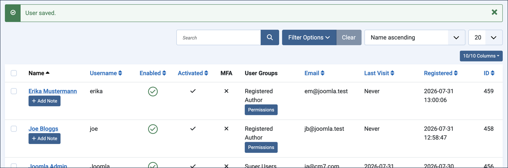
Steps
Logging in to the backend and the frontend are two separate things. You logged in to the backend of the site (the administrative area) to perform the setup, but you are not logged in to the frontend (public-facing side) of the site.
This tutorial will have you view the site (which opens a new tab), then log in to the frontend using the accounts you set up for Joe and Erika. When you do, you remain logged in to the backend with your administrator account in the first tab. Switching between the frontend and backend is just a matter of switching tabs, and you will not need to log in each time.
Users with Author, Editor, and Publisher accounts can log in to the frontend of the site; Administrators and Super Users can log in to both the frontend and the backend of the site.
Create an Article from the Frontend
Click View Site. Result: The Newsroom Submissions menu item does not appear in the Main Menu (access was set for registered users).
Log in as Joe, using the username and password you created for that account. Result: The page refreshes; the login form is replaced by a friendly message with Joe's name and a Log out button, and the Newsroom Submissions link appears in the main menu.
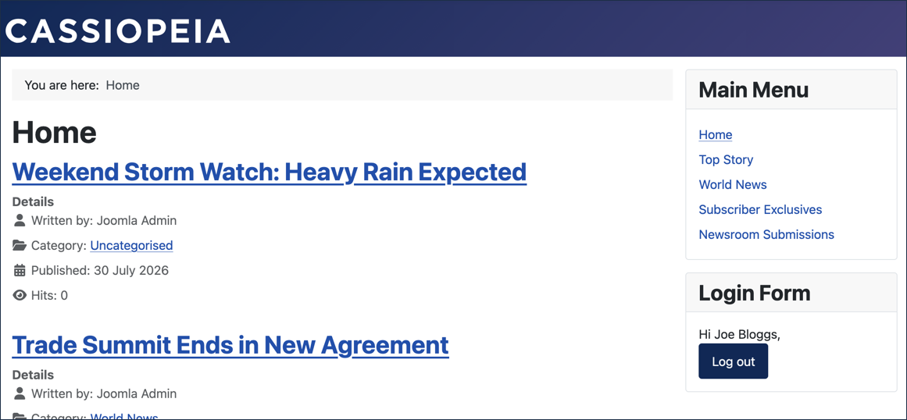
Click Newsroom Submissions. Result: Any already-published Uncategorised articles are listed here. Note: If you've completed earlier tutorials in this section, you may see articles created there — this list shows every published Uncategorised article, not just ones created in this tutorial.
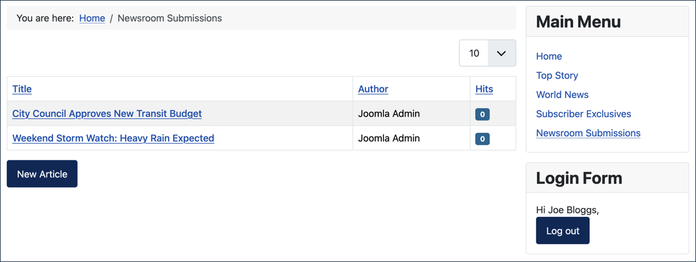
Click New Article.
Title:Local Bakery Wins Regional Award
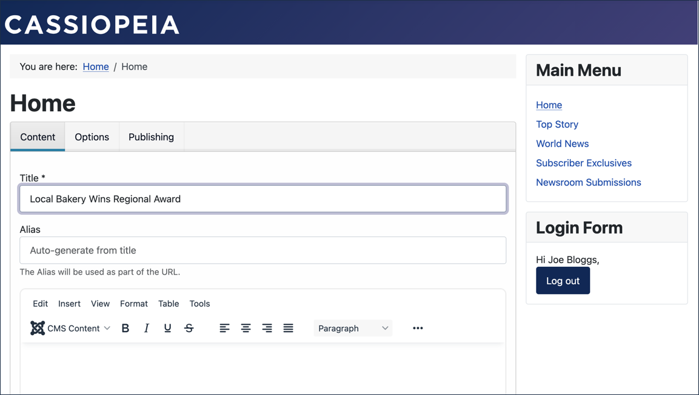
The new-article form in the frontend is simplified from its backend version.
Save & Close. Result: An alert notifies you that the article has been submitted. Note: New articles created by Authors are initially unpublished, and Authors don't have sufficient permissions to view unpublished content, so Joe's new article doesn't appear in the list yet.
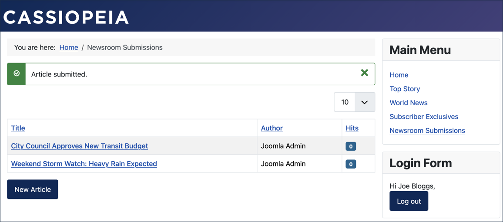
Publish Joe's Article
Switch back to the backend, where you're logged in as an administrator, and click Content > Articles.
Click the Status icon next to the Local Bakery Wins Regional Award article. Result: The list refreshes and the status icon becomes a green checkmark.
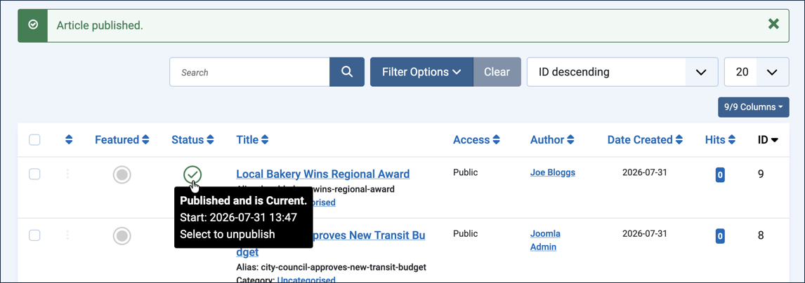
Edit Joe's Article
Switch back to the frontend, where you're logged in as Joe, and refresh the page. Result: The Local Bakery Wins Regional Award article now appears, and you're free to view and edit it.
Edit the article and enter a few words into the body: Owner has been baking for the community since the bakery opened in 2001.
Save & Close.
Return to Newsroom Submissions and create another article titled Weekend Farmers Market Returns Downtown. Note: As before, the article is submitted and unavailable until it's published.
Switch Users
Log out, then log in as Erika, using the username and password you created for that account.
On the Newsroom Submissions page, note that you can see Joe's published article. Result: You're able to view the article but not edit it.
Click New Article.
Title:New Bike Lanes Open Downtown
Save & Close. Result: An alert notifies you that the article has been submitted. Note: New articles created by Authors are initially unpublished, and Authors don't have sufficient permissions to view unpublished content, so Erika's new article doesn't appear in the list yet — only Joe's published article does.
Publish Erika's Article
Switch back to the backend, where you're logged in as an administrator, and click Content > Articles.
Click the Status icon next to the New Bike Lanes Open Downtown article. Result: The list refreshes and the status icon becomes a green checkmark. Note: Do not publish the Weekend Farmers Market Returns Downtown article yet.
Edit Erika's Article
Switch back to the frontend, where you're logged in as Erika, and refresh the page. Result: The New Bike Lanes Open Downtown article now appears, and you're free to view and edit it.
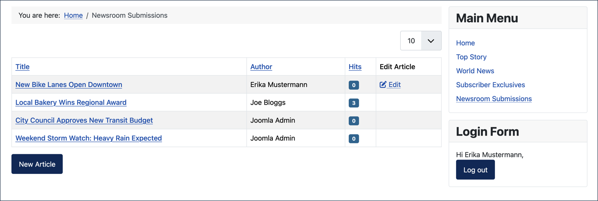
Edit the article and enter a few words into the body: Cyclists can now ride safely to downtown offices and businesses.
Click the ellipsis icon in the toolbar and observe that there are fewer tools available in the frontend than in the backend.
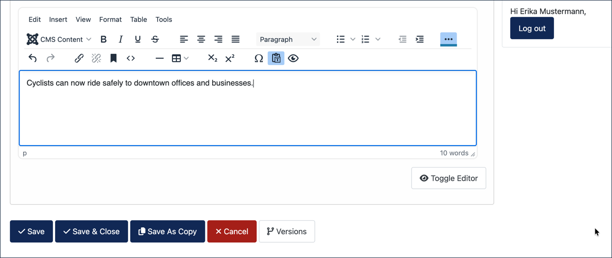
Save & Close.
Authors can create articles and view all published articles, but can only edit their own articles.
The Editor User Role
Return to the backend and upgrade Erika to an Editor role.
Click Users > Manage.
Click Erika's profile to edit it.
Under the Assigned User Groups tab, uncheck Author and check Editor.
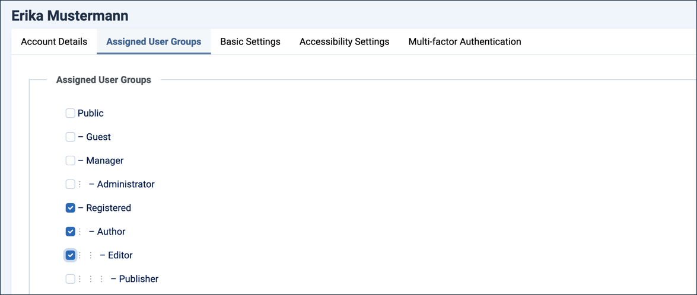
Click Save (don't close; you're coming right back).
Return to the frontend, where you're logged in as Erika, and refresh the Newsroom Submissions page. Result: The Weekend Farmers Market Returns Downtown article now appears as an unpublished item, along with New Bike Lanes Open Downtown and Local Bakery Wins Regional Award.
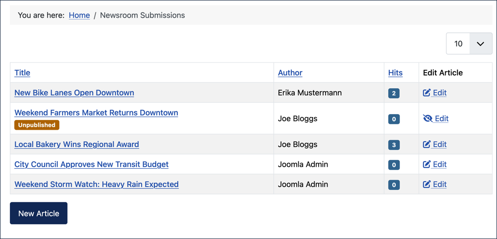
As an Editor, you're able to edit any article. Edit the Weekend Farmers Market Returns Downtown article:
Add a few words to the body, Fresh produce will be available on Saturday afternoons.
Click the Options tab. Result: The article status is Unpublished. Note: You're unable to change the status — clicking the dropdown does nothing.
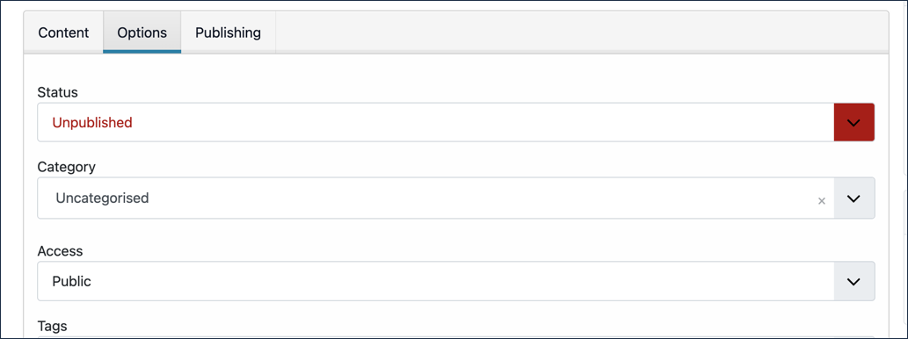
Save & Close.
The Publisher User Role
Return to the backend and upgrade Erika to a Publisher role.
Under the Assigned User Groups tab, check Publisher.
Save & Close.
Return to the frontend, where you're still logged in as Erika.
Publish the Weekend Farmers Market Returns Downtown article:
Edit the article.
Click the Options tab and change Status to Published.
Click the Content tab and extend the toolbar. Result: More tools are available to publishers.
Save & Close.
Return to the Newsroom Submissions page and observe that the Weekend Farmers Market Returns Downtown article no longer has the Unpublished tag.
Log out, then log in as Joe again.
Verify that you can now see and edit the Weekend Farmers Market Returns Downtown article.
Permissions for Individual Articles
Return to the backend, click Content > Articles, then click Local Bakery Wins Regional Award to edit it.
Click the Permissions tab. Result:
The user groups appear on the left, and the selected group's permissions appear on the right.
Public is highlighted on the left, the Public's permissions appear on the right.
All of the permissions here are Inherited from higher level settings that apply to all articles — this is the default, and the other articles are the same.
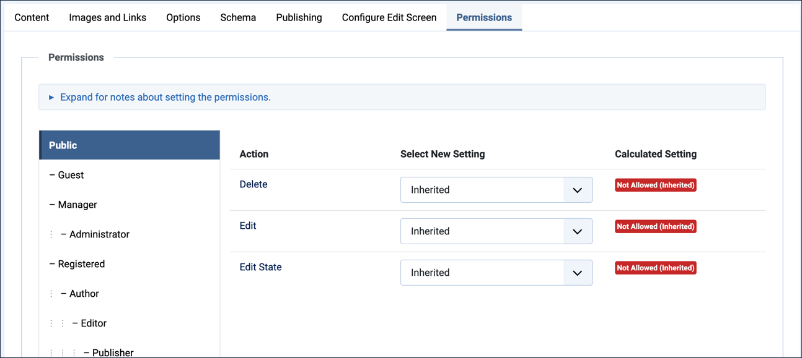
Note:Public users are not allowed to Delete, Edit, or Edit State of any articles.
Click Author. Result: Authors are not allowed to edit the article. Note:
As Authors Joe and Erika were able to edit their own articles.
This screen indicates they are not allowed to edit articles.
The intent here is that authors are not allowed to edit all articles—edit articles in general.
There is a higher-level permission that we will cover later in the tutorial that gives authors permission to edit their own articles.
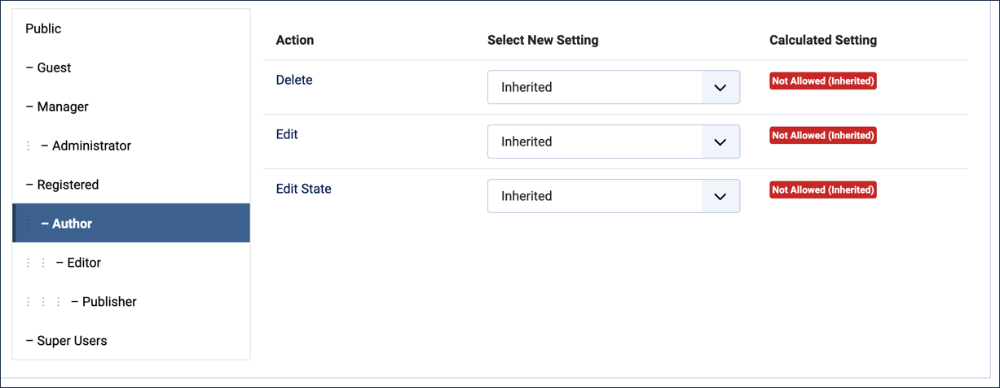
Click Editor. Result: Editors are allowed to edit all articles:
When Erika was in the Editor role, she could edit any article.
Joe as an Author can only edit his own.
Neither Authors nor Editors can publish, or otherwise change the status of articles.
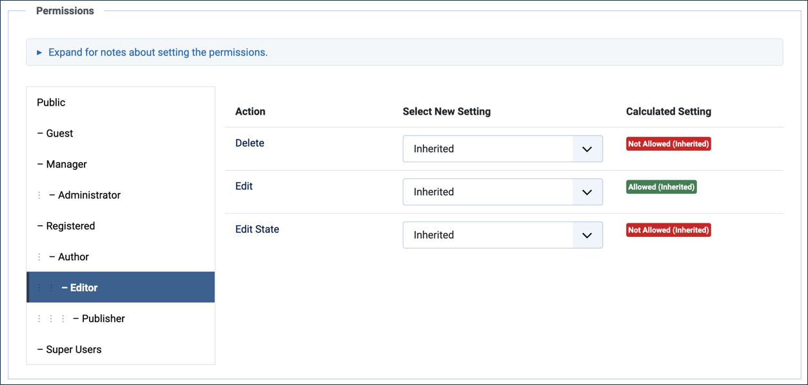
Click Publisher. Result: Publishers are allowed to edit and publish (change state of) articles:
When Erika became a publisher, she was able to publish the Weekend Farmers Market Returns Downtown article.
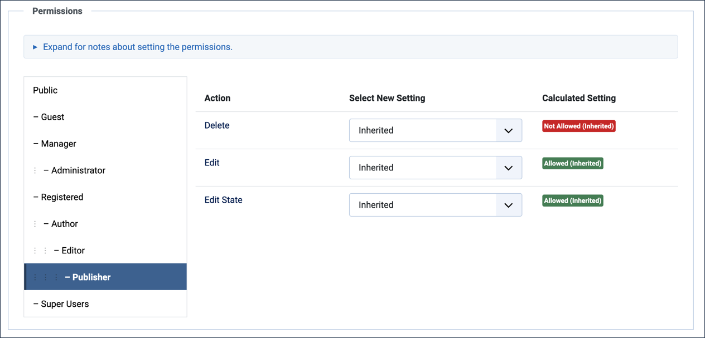
As an administrator, you can override these inherited permissions when needed.
Click Close to close the article without saving.
Permissions for All Articles
From the Content > Articles list, click the Options button in the upper right.
Select Articles on the left to highlight it.
Click the Permissions tab. Result: The user groups appear on the left, and the permissions of the highlighted group appear on the right.
These are the permissions that all articles inherit from, as we saw earlier.
Click the Author group. Result: Authors are not allowed to edit articles generally (all articles), but they are allowed to Create and Edit Own, meaning they can create new articles and edit any articles they created. Note: This is the permission that allows Joe and Erika to edit their own articles.
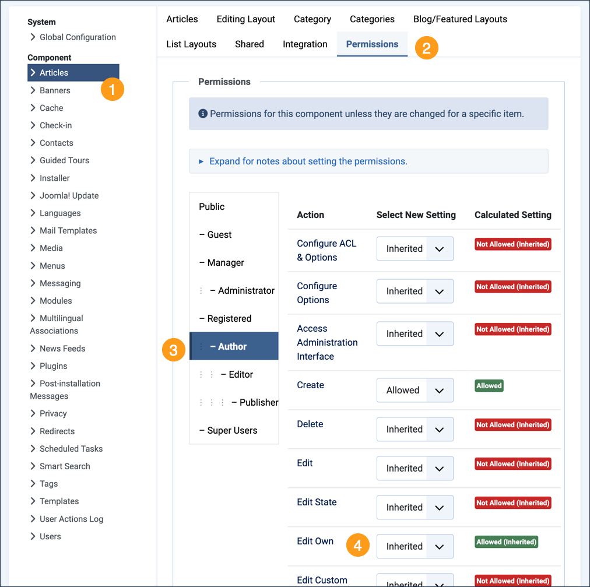
Concepts
Joomla provides a basic framework for authors, editors, and publishers to collaborate on creating and publishing content.
The "Edit Own" permission is derived from settings that control all articles; viewing the permissions for a single article, where it appears that authors have no editing permissions, can be misleading.